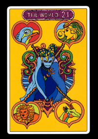

The World
-
Intro
Apparence
Capacité
- Force : The World possède une force immense,puisqu'il fait jeu égal avec Star PLlatinum qui lui est capable d'arrêter d'un seul coup de poing un semi-remorque fonçant sur une Jeep transportant 4 hommes et une fille. .
- Arrêt du temps: le véritable de The World est d'arreter le temps pendant: d'abord 5 seconde ensuite 9seconde lorsque le corps de Dio celui de Jonathan Joestar ne le génais plus lorsqu'il a bu du sang de Joestar à l'occurence celui de Joseph. Il est supposé qu'a ce moment avec de l'entraînement il aurait pu arreter le temps pendant plusieur minute voir des heures 
The World est le stand de Dio Brando, l'antagoniste principale de JOJO's Bizare adventure. Dio a été repécher au large des côtes africaine. Apreès avoir refais surface il voyage à travers le monde et c'est en rencontrant Enya Geil qu'il reçoit son stand à l'aide de l'arc et la flèche.
The World est un humanoîde musculeux jaune portant un casque en forme de V. Dans son dos des bombones d'oxygène représentant la peur de Dio se noyer (car il a été enfermé dans un cercueil suos l'ocean pendant des années). Lorsque Dio Ce sert de son stand il crie: "muda muda muda...." voulant dire :"inutile".
The World est un stand d'une précision d'une force et d'une vitesse sans égal. Son seul défaut sa portée qui n'est que de 2 mètre.